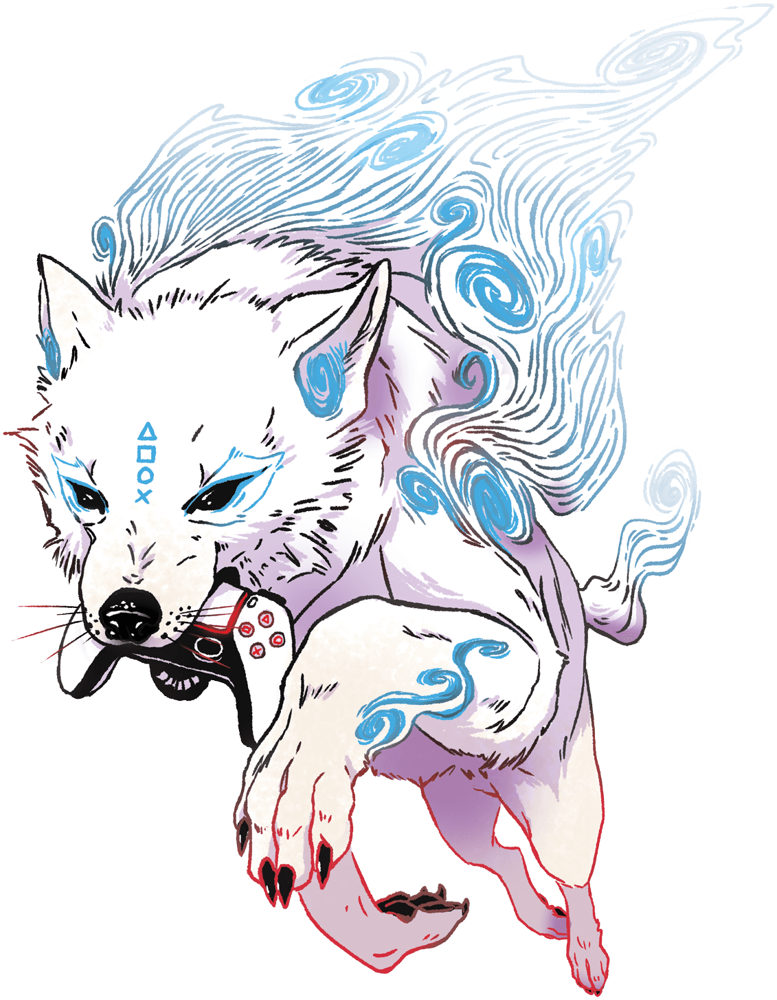
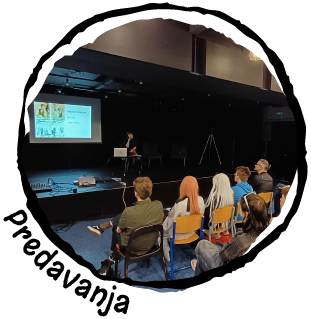
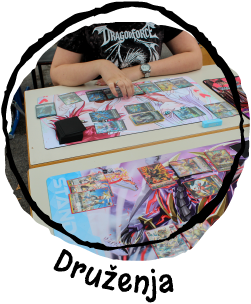
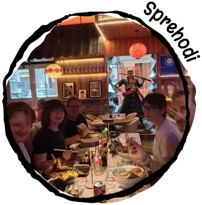
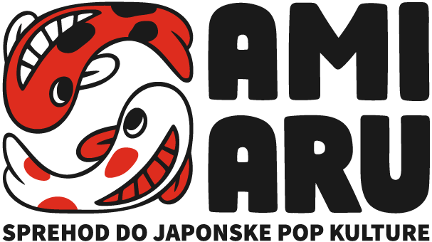

TVOJ NASLEDNJI SVET.
ONE UP2026.
En dogodek. Neskončno svetov.
Anime, gaming, cosplay in ljudje, ki te razumejo.
Vstopi v svet ONE UP in odkrij svojo naslednjo strast.
IZ ARHIVA · 14. FEBRUAR 2026 · CELJE
IZBERI SVOJO ZGODBO
Samo v svetu AMIARU
Ni vsebin za prikaz.
NAJDI SVOJE LJUDI
Kam te vleče danes?
RADOVEDNOST NAS POVEZUJE
Sprehod do
japonske pop kulture.
Vsak sprehod se začne z radovednostjo. Skupaj odkrivamo japonske sodobne trende in tradicijo, izmenjujemo zgodbe ter spoznavamo ljudi s podobnimi interesi. Sproščeno, dostopno in v dobri družbi.

01RAZISKUJ SKUPAJSprehodi z AMIARU
Nova pot. Dober pogovor. In nekaj japonske kulture na vsakem koraku.
Poglej idejo +

01Sprehodi z AMIARU
Nova pot. Dober pogovor. In nekaj japonske kulture na vsakem koraku.
Poglej idejo +Manga na sprehodu
Prinesi priporočilo za najljubšo mango. Med sproščenim sprehodom si izmenjamo zgodbe, spoznamo nove naslove in se ustavimo za pogovor.
Spoznaj dejavnosti AMIARU ↗
02TUKAJ SI MED SVOJIMISpoznaj svojo skupnost
Najljubši anime je lahko začetek čisto novega prijateljstva.
Poglej idejo +

02Spoznaj svojo skupnost
Najljubši anime je lahko začetek čisto novega prijateljstva.
Poglej idejo +Še ena epizoda pogovora
Srečanje za anime navdušence in radovedne začetnike. Vsak predstavi en naslov, ki mu nekaj pomeni. Brez predznanja in brez razkrivanja ključnih zapletov.
Spoznaj našo skupnost ↗
03TRADICIJA SREČA SEDANJOSTOd tradicije do danes
Od prvega pregiba papirja do svetov, ki jih ustvarjamo danes.
Poglej idejo +

03Od tradicije do danes
Od prvega pregiba papirja do svetov, ki jih ustvarjamo danes.
Poglej idejo +En list, nešteto možnosti
Začnemo s preprostim origamijem in pogovorom o japonski tradiciji. Nato vsak motiv nadgradi po svoje — z barvo, ilustracijo ali navdihom iz mange.
Razišči področja Tori ↗04TVOJA ZGODBA ŠTEJEDeli svojo strast
Skica, kostum ali priporočilo. Vsaka strast si zasluži svoj prostor.
Poglej idejo +
Deli svojo strast
Skica, kostum ali priporočilo. Vsaka strast si zasluži svoj prostor.
Poglej idejo +Pokaži, kaj ustvarjaš
Sproščen krog ustvarjalcev: pokaži delo v nastajanju, povej, kaj te navdihuje, ali vprašaj za nasvet. Dobrodošli so tudi tisti, ki šele iščejo svoj prvi projekt.
Spoznaj ustvarjalce ONE UP 2026 ↗Predlogi za prihodnja srečanja, brez razpisanih terminov.
Za prvi korak potrebuješ samo radovednost.
VSTOPI GLOBLJE
Razišči AMIARU
TO NI ZADNJA EPIZODA.
Najboljše zgodbe
ustvarjamo skupaj.
Sprehod do japonske pop kulture se začne z radovednostjo.
Nadaljuje pa z ljudmi, ki jo delijo s tabo.
